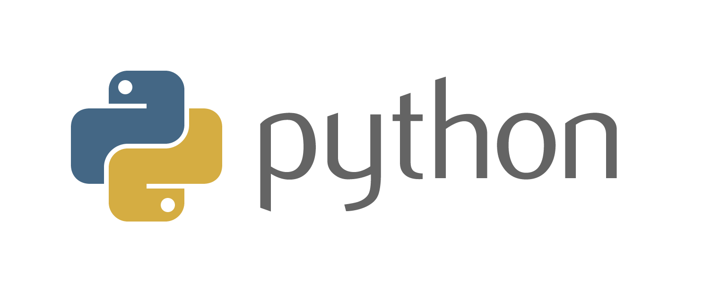
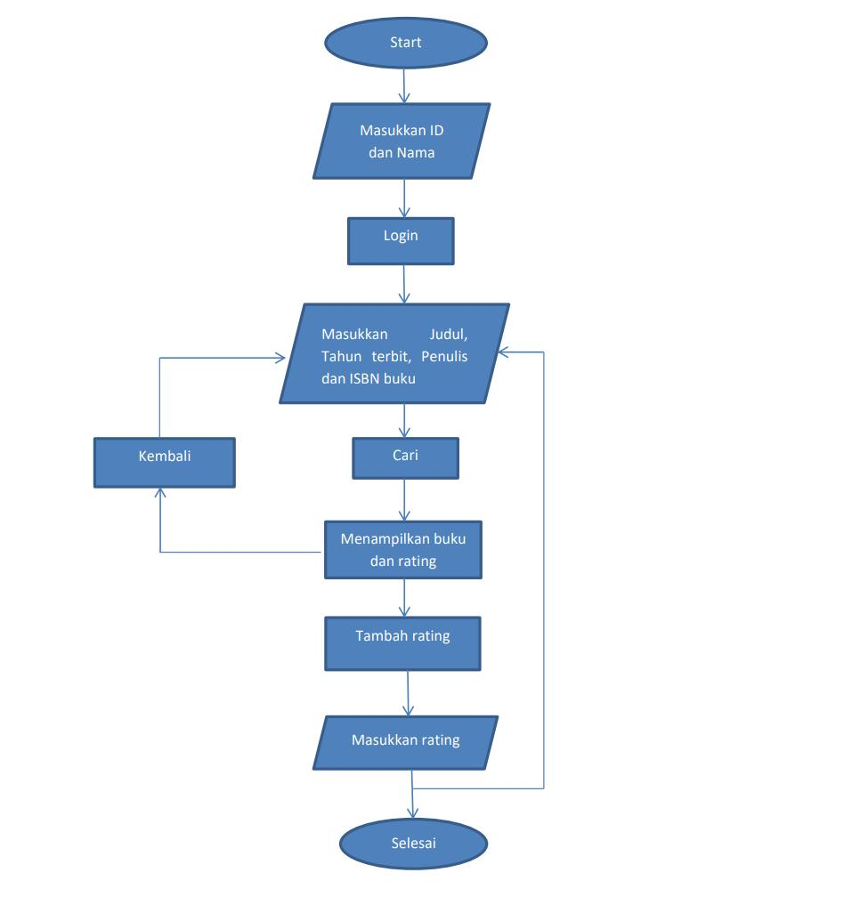

Aplikasi Pencari Buku Berbasis CRUD
Anggota Kelompok
Galih Multi Lidzikri (2103739)
Kevin Alfian Siagian (2104162)
Vladio Sada Arihta Sembiring (2104114)
Problem Yang Diangkat
Perkembangan dunia komputer yang semakin kompleks mendorong setiap
individu ataupun kelompok harus menerapkannya dalam segala aktifitas. Setiap
sistem yang ada seakan kurang lengkap ketika masih menggunakan model
ataupun pengelolaan secara manual, disamping sangat banyak energi dan sumber
daya yang terbuang, baik dari segi finansial tentunya menjadikan biaya lebih
tinggi, dari segi waktu tentunya akan memakan waktu yang lebih banyak.
Teknologi Informasi tidak hanya mempengaruhi sebuah sistem informasi
namum memiliki pengaruh dalam kehidupan sehari-hari, gaya hidup mulai
berubah seiring dengan produk-produk teknologi informasi yang semakin
menjamur setiap saat.
Dalam sebuah Perpustakaan
peranan teknologi informasi sangat diperlukan. Karena semakin berkembangnya
suatu perusahaan bertambahnya jumlah Pegawai dan ilmu pengetahuan yang
semakin berkembang, mau tidak mau perpustakaan harus meningkatkan pelayanan
dan kualitas sumber daya manusia yang ada. Oleh karena itu saya dan teman-teman
mebuat sebuah aplikasi "Pencari Buku" berbasis CRUD
sehingga siswa yang ingin mencari buku maka pengelola perpustakaan dapat
mencari melalui komputer yang telah disediakan,petugas tidak perlu lagi mencari secara
manual tetapi data dapat dimasukkan melalui sebuah Sistem Informasi.
Solusi Project
Aplikasi Create, Read, Update, Detele (CRUD) adalah aplikasi standar yang pasti ada jika kita ingin membuat aplikasi web dinamis. Dengan fungsi CRUD kita dapat melakukan manipulasi data di dalam database melalui aplikasi yang dibuat.
Pembuatan aplikasi juga menggunakan bahasa python dan memakai database local yang berasal dari phpmyadmin
Program ini dapat mencari buku dengan nama buku, tahun penerbitan buku, penulis buku dan nomor ISBN sehingga mempermudah dalam melakukan pencarian sebuah buku
serta pelanggan dapat memberikan review terhadap sebuah buku dan penulis buku sehingga akan mendapatkan sebuah tanggapan atau penilaian dari pelanggan terhadap buku atau penulis tersebut.
Database(PHPMYADMIN)

phpMyAdmin adalah perangkat lunak bebas yang ditulis dalam bahasa pemrograman PHP yang digunakan untuk menangani administrasi MySQL melalui website Jejaring Jagat Jembar (World Wide Web) . phpMyAdmin mendukung berbagai operasi MySQL,
diantaranya (mengelola basis data, tabel-tabel, bidang (fields), relasi (relations), indeks, pengguna (users), perizinan (permissions), dan lain-lain).
Bahasa Python

Python adalah bahasa pemrograman interpretatif yang dapat digunakan di berbagai platform dengan filosofi perancangan yang berfokus pada tingkat keterbacaan kode dan merupakan
salah satu bahasa populer yang berkaitan dengan Data Science, Machine Learning, dan Internet of Things (IoT).
Keunggulan Python yang bersifat interpretatif juga banyak digunakan untuk prototyping, scripting dalam pengelolaan infrastruktur, hingga pembuatan website berskala besar.
Visual Studio Code
Visual Studio Code (disingkat VSCode) adalah perangkat lunak penyunting kode-sumber buatan Microsoft untuk Linux, macOS, dan Windows. Visual Studio Code menyediakan fitur seperti penyorotan sintaksis, penyelesaian kode, kutipan kode, merefaktor kode, pengawakutuan, dan Git. Microsoft merilis sumber kode
Visual Studio Code di repositori GitHub dengan lisensi MIT (Code - OSS),sedangkan biner yang dibangun oleh Microsoft tidak dirilis dengan lisensi MIT dan merupakan perangkat lunak berpemilik.
Konsep/Flowchart

Panduan Aplikasi
Login kedalam aplikasi dgn memasikan id dan nama(12345 dan ayo)
Dapat membuat id baru dengan menekan tombol SIGN UP
Masukan kentuan buku yang dicari (Judul buku, Tahun terbit, No ISBN, Penulis buku)
Jika kentuan tidak diisi buku tidak dapat dicari
Jika Buku tidak ada maka akan di berikan peringatan bahwa buku tidak ada
Jika buku yang dicari ada akan pindah ke halaman review dimana ada rating dari buku yang dicari dan riwayat rating yang diberikan pengguna lain
Untuk Menambahkan rating, tekan tombol ADD RATE
Pilih berapa nilai rating yang akan diberikan
Tekan Tombol ADD untuk menambahkan rating
Setelah ditambahkan pengguna akan kembali ke menu pencarian buku
Referensi
VSCODE
Python
PHPMYADMIN
Python GUI
Python Connect To Database
{kind=link}